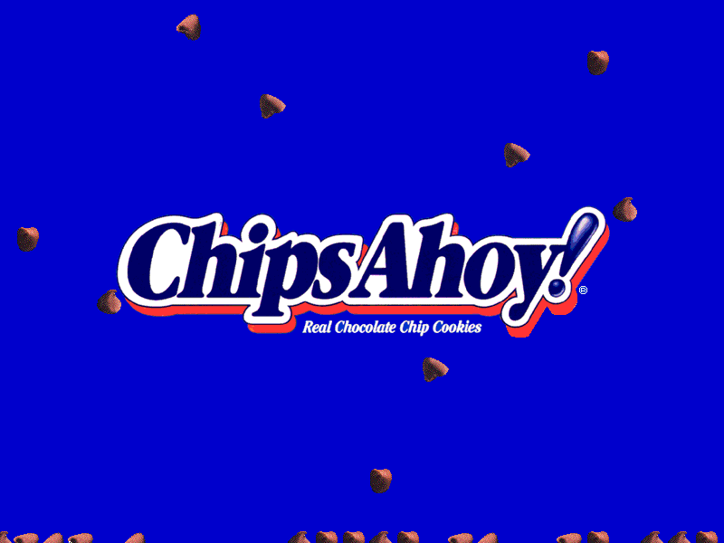
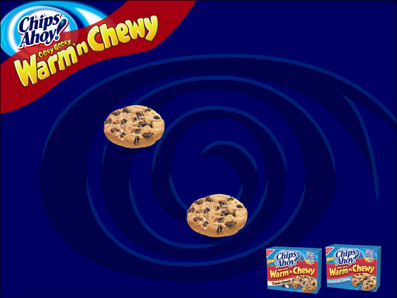

Chips Ahoy! Screensavers

Chips Ahoy!

Note: This is a 16-bit program and requires special programs to run on 64-bit Windows, such as otvdm.
Note 2: This screensaver will not properly run on versions of Windows beyond Windows 2000.
DOWNLOAD
 .exe file zipped (Windows 95) (738 KB)
.exe file zipped (Windows 95) (738 KB)
.exe file zipped (Windows 3.1) (837 KB)
.sit file (Mac OS) (1.29 MB)
Ooey Gooey Warm 'n Chewy

DOWNLOAD
.exe file zipped (1.04 MB)
.exe file zipped (No Sound) (988 KB)